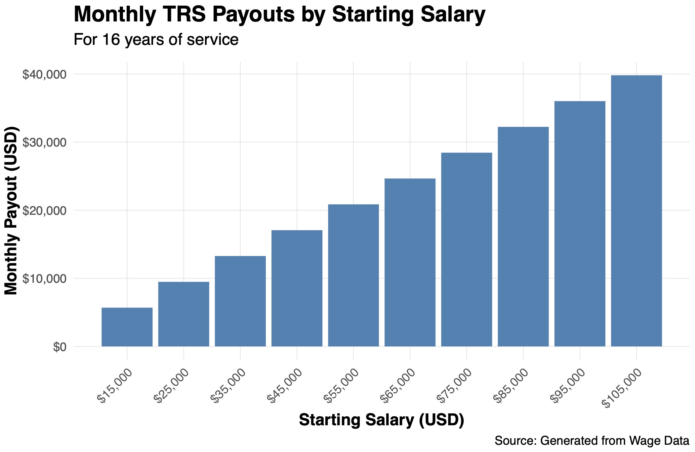

Monte Carlo-Informed Selection of CUNY Retirement Plans
by Jason Amey
Table of Contents
I. Introduction
II. Registration for API Keys
III. Data Acquisition from FRED and Alpha Vantage
IV. Investigation and Visualizing of Financial Data
V. Historical Comparison of TRS and ORP
VI. Long-Term Average Analysis
VII. Monte Carlo Analysis
I. Introduction
The Teachers Retirement System (TRS) is a traditional pension plan offered by CUNY that provides retirees with a fixed, defined benefit based on their years of service and final average salary (FAS). Employees contribute a percentage of their paycheck to the pension fund, with rates increasing by salary tiers, and the retirement benefit is calculated using a formula based on years of service and FAS. TRS participants receive an annual inflation adjustment to their benefit tied to the Consumer Price Index (CPI), capped between 1% and 3%. This type of plan shifts market risk to the employer; if the market languishes, CUNY covers the shortfall, while surplus returns benefit the institution.
The Optional Retirement Plan (ORP) is a defined-contribution plan akin to a private-sector 401(k), where both the employee and employer contribute to a retirement account invested in mutual funds. Contributions vary by salary tier for employees and are fixed at 8% for the first seven years and 10% thereafter for the employer. Participants choose investments such as Fidelity Freedom Funds, which adjust asset allocation based on age, gradually shifting from equities to bonds and short-term debt as retirement nears. At retirement, employees can withdraw funds at their desired rate, with unspent balances continuing to grow and being inheritable by heirs. Unlike TRS, the ORP places market risk on the employee, as the final retirement amount depends on investment performance and withdrawal strategies.
Performing a comparison between the Teachers Retirement System (TRS) and the Optional Retirement Plan (ORP) involves examining key aspects such as risk allocation, benefit predictability, and flexibility. Understanding these differences requires a solid grasp of economic indicators like inflation and market performance, as they directly impact the stability and returns of each plan. The choice between TRS and ORP depends on an individual’s career timeline, financial priorities, and risk tolerance.
The following two data sources are used to collect information for this analysis:
The Federal Reserve Economic Data (FRED) platform, maintained by the Federal Reserve Bank of St. Louis, is a critical resource for accessing a vast repository of financial and economic data. FRED offers over 800,000 data series1 from various sources, including the U.S. government, international organizations, and private institutions, covering topics such as inflation, employment, GDP, interest rates, and market indices.
Alpha Vantage offers real-time and historical financial market data through a robust API. Covering a wide range of asset classes—including stocks, ETFs, mutual funds, and commodities—along with economic indicators, Alpha Vantage serves as an extensive source for global market data.
II. Registration for API Keys
API Keys for http requests from httr2 were secured from Alpha Vantage and FRED.
The API keys are stored as environment variables through a .Renviron file. This prevents hardcoding the keys directly into the project, enhancing security and privacy. By adding the lines FRED_API_KEY=your_fred_api_key_here and ALPHA_API_KEY=your_alpha_api_key_here to a .Renviron file, the project accesses the keys through the following syntax: Sys.getenv("FRED_API_KEY") and Sys.getenv("ALPHA_API_KEY").
This method ensures sensitive information is kept secure, while also making the code portable across different environments without exposing the keys.
III. Data Acquisition from FRED and Alpha Vantage
Datasets queried from FRED:
Employment Cost Index: Wages and Salaries: State and Local Government: All Workers (ECIGVTWAG)
This metric provides insight into salary trends, which directly influence contributions and the final average salary (FAS) for TRS participants, as well as the potential growth of ORP accounts through increased employee and employer contributions.
Consumer Price Index for All Urban Consumers: All Items in New York-Newark-Jersey City, NY-NJ-PA (CBSA) (CUURA101SA0)
This is important for modeling the inflation adjustments to TRS benefits and the impact of inflation on withdrawal rates for ORP participants, ensuring the analysis accounts for regional cost-of-living trends.
3-Month Treasury Bill Secondary Market Rate, Discount Basis (TB3MS)
This measure represents returns on short-term debt, aligning with the bond and short-term debt allocations in ORP investments, particularly for older participants seeking portfolio stability.
Datasets queried from Alpha Vantage:
SPDR S&P 500 ETF Trust (SPY)
This ETF tracks the S&P 500, providing a reliable measure of overall US equity market performance, critical for modeling the US Equity Market Total Returns portion of both TRS and ORP portfolios.
iShares Core U.S. Aggregate Bond ETF (AGG)
As a stand-in for bond market returns, AGG is essential for evaluating the fixed-income allocations in ORP portfolios and understanding bond performance in stable, low-risk investments. This will be used for the Bond Market Total Returns portion of our portfolio analyis.
iShares MSCI ACWI ETF (ACWI)
This global equity ETF captures international market performance representing the International Equity Market component of ORP returns.
This project uses the following packages: scales, shiny,RColorBrewer,httr2,jsonlite, dplyr,ggplot2,zoo,tidyr,lubridate,purrr
> show the code
library(shiny)
library(shinythemes)
library(RColorBrewer)
library(httr2)
library(jsonlite)
library(dplyr)
library(ggplot2)
library(zoo)
library(tidyr)
library(lubridate)
library(purrr)
# Environmental variables are used to for API keys stores in .Renviorn
readRenviron("LOCATION_OF_YOUR_.Renviorn_FILE")
# FRED data
FRED_API_KEY <- Sys.getenv("FRED_API_KEY")
FRED_BASE <- "https://api.stlouisfed.org/fred/series/observations"
# Function for building requests with base URL and query parameters
build_request <- function(base_url, ...) {
request(base_url) |>
req_url_query(...)
}
# Function for sending GET requests to a REST API with response parsed as JSON
send_request <- function(req) {
response <- req |>
req_perform()
if (resp_status(response) == 200) {
return(response |> resp_body_json(simplifyVector = TRUE))
} else {
stop("Request failed. Status code: ", resp_status(response))
}
}
# Function to loop through every FRED series, fetch data, and save to .csv
# Data was saved to .csv files to avoid API limits
fetch_fred_data <- function(series_FRED, frequency = "m", FRED_BASE = FRED_BASE, FRED_API_KEY = FRED_API_KEY, output_dir = "data/mp04/"){
for (fred_series in series_FRED) {
# Build the request for FRED
fred_request <- build_request(
FRED_BASE,
series_id = fred_series,
frequency = "m",
api_key = FRED_API_KEY,
file_type = "json"
)
# Fetch and parse the data
fred_data <- send_request(fred_request)
# Extract observations as a data frame
fred_observations <- as.data.frame(fred_data$observations)
fred_observations <- fred_observations |> mutate(
date = as.Date(as.character(date), format = "%Y-%m-%d")
)
# Create a filename for the CSV and save the file
csv_filename <- paste0("data/mp04/", fred_series, "_data.csv")
write.csv(fred_observations, csv_filename, row.names = FALSE)
}
}
# FRED series to iterate over
series_FRED <- c("CES0500000003", "TB3MS", "CPIAUCSL", "CUURA101SA0", )
series_FRED_q <- c("ECIGVTWAG", "ENUC356240010SA")
# Fetch FRED data for quarterly series
fetch_fred_data(series_FRED_q, frequency = "q", FRED_BASE, FRED_API_KEY, output_dir = "data/mp04/")
# Fetch FRED data for quarterly series
fetch_fred_data(series_FRED, frequency = "m", FRED_BASE, FRED_API_KEY, output_dir = "data/mp04/")
# Alpha Vantage Data
ALPHA_BASE <- "https://www.alphavantage.co/query"
ALPHA_API_KEY <- Sys.getenv("ALPHA_API_KEY")
# Define a function to fetch and transform Alpha Vantage data
fetch_alpha_vantage_data <- function(base_url, function_type, symbol, api_key, outputsize = "full") {
# Build the request
request <- build_request(
base_url,
# Be careful: function is a reserved word in R
`function` = function_type,
symbol = symbol,
apikey = api_key,
outputsize = outputsize
)
# Send the request and parse the response
response <- send_request(request)
# Extract the records and metadata
list(
records = response$`Monthly Adjusted Time Series`,
symbol = response$`Meta Data`$`2. Symbol`
)
}
# Define a function to convert Alpha Vantage records into a data frame
records_to_dataframe <- function(records, symbol) {
df <- do.call(rbind, lapply(names(records), function(date) {
data.frame(
date = as.Date(date),
close = as.numeric(records[[date]][["4. close"]]),
adjusted_close = as.numeric(records[[date]][["5. adjusted close"]])
)
}))
# Rename the 'close' column to the symbol
colnames(df)[colnames(df) == "close"] <- symbol
return(df)
}
# The ETFs sought after from Alpha Vantage
symbols <- c("SPY", "AGG", "ACWI")
for (symbol in symbols) {
# Fetch Alpha Vantage data
alpha_data <- fetch_alpha_vantage_data(
base_url = ALPHA_BASE,
function_type = "TIME_SERIES_MONTHLY_ADJUSTED",
symbol = symbol,
api_key = ALPHA_API_KEY
)
# Convert records to a data frame
df <- records_to_dataframe(alpha_data$records, alpha_data$symbol)
df <- df |>
mutate(date = as.Date(date, format = "%Y-%m-%d"))
# Save the data frame to a CSV file for development
csv_filename <- paste0("data/mp04/", symbol, "_data.csv")
write.csv(df, file = csv_filename, row.names = FALSE)
}IV. Investigation and Visualizing of Financial Data
This graph illustrates difference in performance between SPY (S&P 500 ETF) and ACWI (MSCI All Country World Index), with SPY showing much stronger growth compared to ACWI. The U.S. stock market, which has historically outperformed other global markets, especially in recent decades. The reflects the superior recent returns of U.S. stocks, driven by the strong performance of large U.S. companies, technological innovation, and economic growth, which have outpaced many international markets in terms of growth rates.
This kind of graph emphasizes the growth potential of U.S. stocks (SPY) compared to a more diversified global portfolio (ACWI). It shows how U.S. equities have outpaced global equities in recent years, but it doesn’t necessarily predict future performance, as market conditions can change over time.
It also highlights how the historical data chosen this project, which cuts off at 2008 as the earliest year available for ACWI data from Alpha Vantage, may offer a too-rosy distortion for some of the calculations in this analysis.
SPY represents the U.S. large-cap equity market including 500 of the largest publicly traded companies in the United States while ACWI represents a broader global market, representing equities from both developed and emerging markets. Comparing their volatility provides insights into the risk profiles of U.S. equities versus the global market. This plot helps demonstrate while, despite equities’ potential for explosive growth, their volatility remains risky for older-age investors:
What follows is the salary trend for government workers over the past 15 years:
In calculating long-term averages for returns, geometric means were calculated as it’s often prefered in financial analysis.
The arithmetic mean adds up the returns for each period and divides by the number of periods, assuming that each return is independent, not accounting for the effect of compounding. This can overestimate the actual return over time, especially when there is significant volatility.
The geometric mean, on the other hand, takes into account the compounding of returns over multiple periods. It calculates the average rate of return per year that would result in the same overall cumulative return over the entire period. It can be a more accurate reflection of real-world growth, as it incorporates the effect of compounded gains and losses.
The following calculation was used for geometric means: \[ \text{Geometric Mean} = \left( \prod_{i=1}^n (1 + r_i) \right)^{\frac{1}{n}} - 1 \]
| Measure | Annualized Average (%) |
|---|---|
| SPY Returns | 7.48% |
| AGG Returns | 2.99% |
| ACWI Returns | 6.90% |
| US Treasury Returns | 1.10% |
This datta shows the long-term annualized average returns for four different investment assets: SPY (S&P 500 ETF), AGG (U.S. Aggregate Bond Index), ACWI (MSCI All Country World Index), and U.S. Treasury bonds. Over the long term, SPY has provided the highest return at 7.48%, reflecting the strong performance of U.S. equities. ACWI, which represents global equities, generated an average return of 6.90%, indicating that while global stocks have offered solid growth, they still lag behind the U.S. market. AGG returned 2.99%, demonstrating the more stable but lower returns typically associated with bonds. Finally, U.S. Treasury Bonds, with a return of 1.10%, highlight the low-growth, low-risk nature of government debt, which is often used as a safe haven in times of uncertainty. This data underscores the higher potential returns from equities compared to fixed-income investments, but also highlights the classic trade-off between risk and return.
> show the code
library(dplyr)
library(ggplot2)
library(tidyr)
CPI_US <- read.csv("data/mp04/CPIAUCSL_data.csv")
CPI_NY_METRO <- read.csv("data/mp04/CUURA101SA0_data.csv")
TREASURY <- read.csv("data/mp04/TB3MS_data.csv")
# Function that ensures dates are in date format
change_to_date <- function(df){
df <- df |>
mutate(date = as.Date(as.character(date)))
return(df)
}
SPY <- change_to_date(read.csv("data/mp04/SPY_data.csv"))
AGG <- change_to_date(read.csv("data/mp04/AGG_data.csv"))
ACWI <- change_to_date(read.csv("data/mp04/ACWI_data.csv"))
# Data only available quarterly
HOURLY_PRIVATE_NY_WAGES <- read.csv("data/mp04/ENUC356240010SA_data.csv")
GOVERNMENT_WAGES <- read.csv("data/mp04/ECIGVTWAG_data.csv")
SPY_2008 <- SPY |>
filter(date > as.Date("2008-04-29"))
SPY_ACWI <- SPY_2008 |>
left_join(ACWI, join_by(date == date))
RECESSION_PERIODS <- data.frame(
start = as.Date(c("2008-04-30", "2020-02-01")),
end = as.Date(c("2009-06-01", "2020-04-01")),
ymin = -Inf,
ymax = Inf
)
# Plot to demonstrate relationship between US vs. International equities
ggplot(SPY_ACWI, aes(x = date)) +
geom_line(aes(y = adjusted_close.x, color = "SPDR S&P 500 ETF (SPY)")) +
geom_line(aes(y = adjusted_close.y, color = "iShares MSCI ACWI ETF (ACWI)")) +
scale_color_brewer(palette = "Set2") +
geom_rect(data = RECESSION_PERIODS,
aes(xmin = start, xmax = end, ymin = ymin, ymax = ymax),
fill = "grey", alpha = 0.3, inherit.aes = FALSE) +
scale_x_date(limits = range(SPY_ACWI$date), expand = c(0, 0)) +
labs(
title = "Time Series of Adjusted Close Prices for SPY and ACWI",
subtitle = "SPY tracks the S&P 500 Index; ACWI tracks the MSCI All-Country World Index",
x = "Date",
y = "Adjusted Close Price (USD)",
color = "ETF Name and Ticker",
caption = "Source: Alpha Vantage"
) +
theme(axis.line = element_line(color = "black", linewidth = 1),
axis.line.x = element_line(color = "black", linewidth= 1),
axis.line.y = element_line(color = "black", linewidth = 1),
panel.background = element_blank(),
panel.grid.major = element_line(color = "gray90", size = 0.25),
panel.grid.minor = element_line(color = "gray95", size = 0.25),
)
# Calculate rolling volatility (3-period rolling standard deviation)
rolling_window <- 3
data <- SPY_ACWI |>
mutate(
SPY_volatility = zoo::rollapply(adjusted_close.x, rolling_window, sd, fill = NA, align = "right"),
ACWI_volatility = zoo::rollapply(adjusted_close.y, rolling_window, sd, fill = NA, align = "right")
)
# Reshape data for ggplot
volatility_data <- data |>
select(date, SPY_volatility, ACWI_volatility) |>
pivot_longer(cols = -date, names_to = "Symbol", values_to = "Volatility")
# Filter out rows with missing values
volatility_data <- volatility_data |>
filter(!is.na(Volatility))
# Plot the volatility between SPY and ACWI
ggplot(volatility_data, aes(x = date, y = Volatility, color = Symbol)) +
geom_line(size = 0.25) +
scale_x_date(limits = range(volatility_data$date), expand = c(0, 0)) +
scale_color_brewer(palette = "Set1") +
geom_rect(data = RECESSION_PERIODS,
aes(xmin = start, xmax = end, ymin = ymin, ymax = ymax),
fill = "grey", alpha = 0.3, inherit.aes = FALSE) +
labs(
title = "Comparison of Rolling Volatility: SPY vs. ACWI ETFs",
subtitle = "Rolling 3-period standard deviation of adjusted close prices for SPY and ACWI ETFs",
x = "Date",
y = "Rolling Volatility (Standard Deviation of Returns)",
color = "ETF Ticker",
caption = "Source: Alpha Vantage"
) +
theme_minimal() +
theme(
axis.line = element_line(color = "black", linewidth = 1),
axis.line.x = element_line(color = "black", linewidth = 1),
axis.line.y = element_line(color = "black", linewidth = 1),
panel.background = element_blank(),
panel.grid.major = element_line(color = "gray90", size = 0.25),
panel.grid.minor = element_line(color = "gray95", size = 0.25)
)
# Examination of government job salary growth
wage_growth_public <- read.csv("data/mp04/ECIGVTWAG_data.csv") |>
mutate(date = as.Date(date), wage_growth_percent = (value - lag(value)) / lag(value))
WAGE_GROWTH_PUBLIC <- wage_growth_public
# Filter for relevant time fram
wage_growth_2008 <- wage_growth_public |>
filter(date >= as.Date("2008-04-01")) |>
filter(!is.na(wage_growth_percent))
# Perform calculations for wage growth for salary of $45,000 since 2008
STARTING_SALARY <- 45000
salary_data <- wage_growth_2008 |>
mutate(
wage_growth_percent = ifelse(is.na(wage_growth_percent), 0, wage_growth_percent),
salary = STARTING_SALARY * cumprod(1 + lag(wage_growth_percent, default = 0))
)
# Dates needed for salary interpolation
complete_dates <- tibble(date = seq.Date(from = min(salary_data$date),
to = max(salary_data$date),
by = "month"))
# Merge the complete dates with existing salary data
salary_data_interpolated <- salary_data |>
select(date, salary, wage_growth_percent) |>
right_join(complete_dates, by = "date") |>
arrange(date) |>
mutate(
salary = na.approx(salary, na.rm = FALSE),
wage_growth_percent = na.approx(wage_growth_percent, na.rm = FALSE)
) |>
select(-wage_growth_percent)
# Plot charting the expected rise in a government job with salary of $45,000 from 2008
ggplot(salary_data_interpolated, aes(x = date, y = salary)) +
geom_line(color = "blue", size = 1) +
geom_rect(data = RECESSION_PERIODS,
aes(xmin = start, xmax = end, ymin = ymin, ymax = ymax),
fill = "grey", alpha = 0.3, inherit.aes = FALSE) +
labs(
title = "Estimated Salary Growth For State and Local Government",
subtitle = "Starting salary of $45,000 with growth based on FRED Employment Cost Index",
x = "Date",
y = "Salary (USD)",
caption = "Source: Federal Reserve Bank of St. Louis."
) +
scale_x_date(
breaks = seq(min(salary_data$date), max(salary_data$date), by = "2 years"),
labels = scales::date_format("%Y"),
expand = c(0, 0),
) +
theme(
axis.line = element_line(color = "black", linewidth = 1),
axis.line.x = element_line(color = "black", linewidth = 1),
axis.line.y = element_line(color = "black", linewidth = 1),
panel.background = element_blank(),
panel.grid.major = element_line(color = "gray90", linewidth = 0.25),
panel.grid.minor = element_line(color = "gray95", linewidth = 0.25),
axis.text.x = element_text(angle = 45, hjust = 1),
legend.position = "none"
)
# Analyze returns for long-run averages
returns_spy <- read.csv("data/mp04/SPY_data.csv") |>
mutate(
date = as.Date(date), # Convert date to Date format
prev = lead(adjusted_close)
) |>
filter(!is.na(prev)) |>
mutate(
SPY_monthly_adjusted_growth = round((adjusted_close / prev) - 1, 4)
)
returns_agg <- read.csv("data/mp04/AGG_data.csv") |>
mutate(
date = as.Date(date), # Convert date to Date format
prev = lead(adjusted_close)
) |>
filter(!is.na(prev)) |>
mutate(
AGG_monthly_adjusted_growth = round((adjusted_close / prev) - 1, 4)
)
returns_acwi <- read.csv("data/mp04/ACWI_data.csv") |>
mutate(
date = as.Date(date), # Convert date to Date format
prev = lead(adjusted_close)
) |>
filter(!is.na(prev)) |>
mutate(
ACWI_monthly_adjusted_growth = round((adjusted_close / prev) - 1, 4)
)
returns_treasury <- read.csv("data/mp04/TB3MS_data.csv") |>
mutate(date = as.Date(date)) |>
filter(date >= as.Date("2008-04-01")) |>
mutate(date = format(as.Date(date), "%b-%Y"), monthly_return = round(value / 12 / 100, 4)) |>
filter(!is.na(monthly_return)) |>
rename(treasury_monthly_return = monthly_return) |>
select(-starts_with("realtime"))
nyc_cpi <- read.csv("data/mp04/CUURA101SA0_data.csv") |>
filter(value != ".") |>
mutate(
value = as.numeric(value),
prev = lag(value),
date = as.Date(date)
) |>
filter(date >= as.Date("2008-04-01")) |>
filter(!is.na(prev)) |>
mutate(cpi_change = round((value / prev) - 1, 4))
# Function for calculating long run average for returns
geometric_mean <- function(data) {
data <- na.omit(data)
N <- length(data) # Number of data points
return((prod(data + 1))^(1 / N) - 1)
}
# Perform geometric mean calculations
AVG_SPY_RETURNS <- geometric_mean(returns_spy$SPY_monthly_adjusted_growth)
AVG_AGG_RETURNS <- geometric_mean(returns_agg$AGG_monthly_adjusted_growth)
AVG_ACWI_RETURNS <- geometric_mean(returns_acwi$ACWI_monthly_adjusted_growth)
AVG_TREASURY_RETURNS <- geometric_mean(returns_treasury$treasury_monthly_return)
AVG_NYC_CPI <- geometric_mean(nyc_cpi$cpi_change)
# Insert long-term averages into data fram and calculate annualized averages
average_returns <- data.frame(
Metric = c("SPY Returns", "AGG Returns", "ACWI Returns", "Treasury Returns", "NYC CPI"),
Monthly_Average = c(
AVG_SPY_RETURNS,
AVG_AGG_RETURNS,
AVG_ACWI_RETURNS,
AVG_TREASURY_RETURNS,
AVG_NYC_CPI
),
Annualized_Average = c(
12 * AVG_SPY_RETURNS,
12 * AVG_AGG_RETURNS,
12 * AVG_ACWI_RETURNS,
12 * AVG_TREASURY_RETURNS,
12 * AVG_NYC_CPI
)
)
V. Historical Comparison of TRS and ORP
What follows is a comparision between the guaranteed pension plan Teacher Retirement System (TRS), and the Optional Retirement Program (ORP), an investment-based retirement plan.
The TRS is a defined benefit (DB) plan, which means gives retirees a fixed, predictable monthly payout based on a formula that takes into account factors like years of service and salary. Theses payouts reflect a short tenure of working for only ~16 years.
This plot demonstrates that the data increases steadily as the starting salary rises. This type of plan is beneficial for employees who stay with the institution for an extended period, as the monthly benefit is generally based on the final salary and accumulated service years. TRS thus offers security as the pension is guaranteed and retirees are assured of a consistent income stream regardless of market performance.

On the other hand, the ORP is a defined contribution (DC) plan, where both the employee and employer contribute to the individual’s retirement account. The total retirement benefit depends on the contributions made and the performance of the investments over time. The ORP provides more flexibility in terms of investment choices and contribution amounts, but it also introduces a level of risk, as retirees are exposed to the ups and downs of the financial markets. Looking at the data, we can see that for each starting salary, the total portfolio value under the ORP is increasing at a faster rate than the monthly payouts from TRS, reflecting the potential for higher growth in an investment-based plan. However, even though the ORP account balances grow with higher salaries, the monthly payouts (if calculated) would likely be lower than the corresponding payouts from TRS. This highlights a key difference: while the ORP offers a larger accumulated portfolio, it does not guarantee the same level of retirement income as the TRS plan. The TRS payouts, however, are predictable and increase consistently with salary, providing more stability for retirees.
| Starting Salary | Total Portfolio Value, OPR | Monthly Payout, TRS |
|---|---|---|
| $15,000 | $89,744 | $5,689 |
| $25,000 | $149,573 | $9,482 |
| $35,000 | $210,688 | $13,274 |
| $45,000 | $284,711 | $17,067 |
| $55,000 | $370,466 | $20,860 |
| $65,000 | $454,545 | $24,652 |
| $75,000 | $549,199 | $28,445 |
| $85,000 | $630,845 | $32,238 |
| $95,000 | $709,285 | $36,030 |
> show the code
#### TRS CALCULATIONS ####
# Function to calculate salary data for eventual TRS monthly benefit function
calculate_salary_over_time <- function(starting_salary, wage_growth_file, start_date = "2008-04-01") {
# Read and process wage growth data
wage_growth_public <- read.csv(wage_growth_file) |>
mutate(
date = as.Date(date),
wage_growth_percent = (value - lag(value)) / lag(value)
)
# Filter for relevant time frame
wage_growth_2008 <- wage_growth_public |>
filter(date >= as.Date(start_date)) |>
filter(!is.na(wage_growth_percent))
# Perform calculations for wage growth
salary_data <- wage_growth_2008 |>
mutate(
wage_growth_percent = ifelse(is.na(wage_growth_percent), 0, wage_growth_percent),
salary = starting_salary * cumprod(1 + lag(wage_growth_percent, default = 0))
)
# Generate complete sequence of dates
complete_dates <- tibble(date = seq.Date(from = min(salary_data$date),
to = max(salary_data$date),
by = "month"))
# Merge complete dates and interpolate missing salary values
salary_data_interpolated <- salary_data |>
select(date, salary, wage_growth_percent) |>
right_join(complete_dates, by = "date") |>
arrange(date) |>
mutate(
salary = na.approx(salary, na.rm = FALSE),
wage_growth_percent = na.approx(wage_growth_percent, na.rm = FALSE)
) |>
select(-wage_growth_percent)
return(salary_data_interpolated)
}
# Function for TRS Salary - needs salary data from 2008+
calculate_monthly_payout <- function(salary_data){
last_3_salaries <- salary_data |>
filter(date == as.Date("2024-07-01") | date == as.Date("2023-12-01") | date == as.Date("2022-12-01"))
FAS <- mean(last_3_salaries$salary)
# Function to calculate N, years of service
calculate_years_of_service <- function(data, date_col = "date") {
# Find the oldest and most recent dates
oldest_date <- min(data[[date_col]], na.rm = TRUE)
most_recent_date <- max(data[[date_col]], na.rm = TRUE)
# Calculate the years of service
return(as.numeric(difftime(most_recent_date, oldest_date, units = "days")) / 365.25)
}
# Function to calculate retirement benefit
calculate_retirement_benefit <- function(n, fas) {
benefit <- if (n < 20) {
0.0167 * fas * n
} else if (n == 20) {
0.0175 * fas * n
} else {
(0.35 + 0.02 * (n - 20)) * fas
}
return(benefit)
}
# Set file for wage growth
WAGE_FILE <- "data/mp04/ECIGVTWAG_data.csv"
# Sequence of starting salaries
sequence <- seq(15000, 105000, by = 10000)
# Initialize an empty data frame to store results
payout_results <- data.frame()
# Create a sequence of results for TRS payouts
for (starting_salary in sequence) {
salary_data <- calculate_salary_over_time(starting_salary, WAGE_FILE)
monthly_payout <- calculate_monthly_payout(salary_data)
payout_results <- rbind(
payout_results,
data.frame(starting_salary = starting_salary, monthly_payout = monthly_payout)
)
}
# Bar chart for TRS payouts
ggplot(payout_results, aes(x = starting_salary, y = monthly_payout)) +
geom_bar(stat = "identity", fill = "steelblue") +
scale_x_continuous(
breaks = seq(15000, 105000, by = 10000),
labels = scales::label_dollar(scale = 1)) + # Dollar signs and commas for x-axis
scale_y_continuous(labels = scales::label_dollar(scale = 1)) + # Dollar signs and commas for y-axis
labs(
title = "Monthly TRS Payouts by Starting Salary",
subtitle = "For 16 years of service",
x = "Starting Salary (USD)",
y = "Monthly Payout (USD)",
caption = "Source: Generated from Wage Data"
) +
theme_minimal() +
theme(
axis.text.x = element_text(angle = 45, hjust = 1), # Rotate x-axis labels for readability
axis.title.x = element_text(size = 12, face = "bold"),
axis.title.y = element_text(size = 12, face = "bold"),
plot.title = element_text(size = 16, face = "bold"),
plot.subtitle = element_text(size = 12, margin = margin(b = 10)),
panel.grid.major = element_line(color = "gray90", size = 0.25),
panel.grid.minor = element_blank()
)
#### ORP CALCULATIONS ####
salary_data_d <- salary_data_interpolated |>
mutate(date_join = format(as.Date(date), "%b-%Y"))
returns_agg_d <- returns_agg |>
mutate(date_join = format(as.Date(date), "%b-%Y")) |>
select(-date)
returns_spy_d <- returns_spy |>
mutate(date_join = format(as.Date(date), "%b-%Y")) |>
select(-date)
returns_acwi_d <- returns_acwi |>
mutate(date_join = format(as.Date(date), "%b-%Y")) |>
select(-date)
returns_treasury_d <- returns_treasury |>
mutate(date_join = date) |>
select(-date)
combined_returns_d <- returns_spy_d |>
full_join(returns_agg_d, by = "date_join") |>
full_join(returns_acwi_d, by = "date_join") |>
full_join(returns_treasury_d, by = "date_join") |>
full_join(salary_data_d, by = "date_join")
combined_returns_d <- combined_returns_d |>
select(-starts_with("prev"),-starts_with("adjusted"), -date )
COMBINED_RETURNS <- combined_returns_d |>
drop_na()
combined_csv_filename <- paste0("data/mp04/", "COMBINED_SERIES.csv")
write.csv(COMBINED_RETURNS, combined_csv_filename, row.names = FALSE)
# Drop all rows that do not exist (leaves >2008 data)
combined_returns_2008 <- na.omit(combined_returns_d) |>
arrange(salary) |>
select(-SPY, -AGG, -ACWI, -value)
### FUNCTIONS FOR CALCULATING ORP PARAMETERS
# Employer contribution rate function
employer_rate <- function(years_of_service) {
ifelse(years_of_service <= 7, 0.08, 0.10)
}
# Employee contribution rate function
employee_rate_calculator <- function(salary) {
case_when(
salary <= 45000 ~ 0.03,
salary <= 55000 ~ 0.035,
salary <= 75000 ~ 0.045,
salary <= 100000 ~ 0.0575,
TRUE ~ 0.06
)
}
# US Equities rate function
us_equities_rate_calculator <- function(age) {
case_when(
age >= 25 & age <= 49 ~ 0.54,
age >= 50 & age <= 59 ~ 0.47,
age >= 60 & age <= 74 ~ 0.34,
age >= 75 ~ 0.19,
TRUE ~ NA_real_ # Return NA for ages outside the range
)
}
# International Equities rate function
international_equity_rate_calculator <- function(age) {
case_when(
age >= 25 & age <= 49 ~ 0.36,
age >= 50 & age <= 59 ~ 0.32,
age >= 60 & age <= 74 ~ 0.23,
age >= 75 ~ 0.13,
TRUE ~ NA_real_
)
}
# Bonds rate function
bonds_rate_calculator <- function(age) {
case_when(
age >= 25 & age <= 49 ~ 0.10,
age >= 50 & age <= 59 ~ 0.21,
age >= 60 & age <= 74 ~ 0.43,
age >= 75 ~ 0.62,
TRUE ~ NA_real_
)
}
# Short-Term Debt rate function
short_term_debt_rate_calculator <- function(age) {
case_when(
age >= 75 ~ 0.06, # Short-term debt only applies to age 75+
TRUE ~ 0.00
)
}
# Function to add date and age to returns data
add_date_and_age <- function(data, starting_age, starting_date) {
starting_date <- as.Date(starting_date)
data <- data |>
mutate(
date = seq.Date(from = starting_date, by = "month", length.out = n()),
# Add 1/12 per row
age = round(starting_age + (row_number() - 1) / 12, 2)
) |>
arrange(date)
}
# Function to add years of service and salary to return data
add_service_and_salary <- function(data, starting_salary, wage_growth = AVG_NYC_CPI) {
yearly_wage_growth <- wage_growth * 12
data <- data |>
mutate(
years_of_service = floor((row_number() - 1) / 12 + 1),
salary = starting_salary * (1 + yearly_wage_growth)^(years_of_service - 1)
)
return(data)
}
# Function to perform portfolio calculations for available data
compute_portfolio_rates <- function(data) {
data |>
mutate(
# Determine employer contribution rate
employer_rate = ifelse(years_of_service <= 7, 0.08, 0.10),
# Calculate employee contribution rate using a custom function
employee_rate = employee_rate_calculator(salary),
# Compute total monthly contribution
total_contribution = employer_rate * salary / 12 + employee_rate * salary / 12,
# Calculate allocation rates for different asset classes
us_equity_rate = us_equities_rate_calculator(floor(age)),
international_equity_rate = international_equity_rate_calculator(floor(age)),
bond_rate = bonds_rate_calculator(floor(age)),
short_term_bond_rate = short_term_debt_rate_calculator(floor(age)),
)
}
compute_portfolio_rates_retired <- function(data) {
data |>
mutate(
# Calculate allocation rates for different asset classes
us_equity_rate = us_equities_rate_calculator(floor(age)),
international_equity_rate = international_equity_rate_calculator(floor(age)),
bond_rate = bonds_rate_calculator(floor(age)),
short_term_bond_rate = short_term_debt_rate_calculator(floor(age)),
)
}
calculate_cumulative_portfolio <- function(data) {
data <- data |>
mutate(
# Contributions to each asset class
us_equity_contribution = total_contribution * us_equity_rate,
international_equity_contribution = total_contribution * international_equity_rate,
bond_contribution = total_contribution * bond_rate,
short_term_bond_contribution = total_contribution * short_term_bond_rate,
# Initialize cumulative values
us_equity_value = 0,
international_equity_value = 0,
bond_value = 0,
short_term_bond_value = 0,
total_portfolio_value = 0
)
for (i in seq_len(nrow(data))) {
# For the first row, start with contributions
if (i == 1) {
data$us_equity_value[i] <- data$us_equity_contribution[i] * (1 + data$SPY_monthly_adjusted_growth[i])
data$international_equity_value[i] <- data$international_equity_contribution[i] * (1 + data$ACWI_monthly_adjusted_growth[i])
data$bond_value[i] <- data$bond_contribution[i] * (1 + data$AGG_monthly_adjusted_growth[i])
data$short_term_bond_value[i] <- data$short_term_bond_contribution[i] * (1 + data$treasury_monthly_return[i])
} else {
# For subsequent rows, compound previous value and add contribution
data$us_equity_value[i] <- (data$us_equity_value[i - 1] + data$us_equity_contribution[i]) * (1 + data$SPY_monthly_adjusted_growth[i])
data$international_equity_value[i] <- (data$international_equity_value[i - 1] + data$international_equity_contribution[i]) * (1 + data$ACWI_monthly_adjusted_growth[i])
data$bond_value[i] <- (data$bond_value[i - 1] + data$bond_contribution[i]) * (1 + data$AGG_monthly_adjusted_growth[i])
data$short_term_bond_value[i] <- (data$short_term_bond_value[i - 1] + data$short_term_bond_contribution[i]) * (1 + data$treasury_monthly_return[i])
}
# Update total portfolio value
data$total_portfolio_value[i] <- data$us_equity_value[i] +
data$international_equity_value[i] +
data$bond_value[i] +
data$short_term_bond_value[i]
}
return(data)
}
calculate_cumulative_portfolio_working <- function(data) {
data <- data |>
mutate(
# Contributions to each asset class
us_equity_contribution = total_contribution * us_equity_rate,
international_equity_contribution = total_contribution * international_equity_rate,
bond_contribution = total_contribution * bond_rate,
short_term_bond_contribution = total_contribution * short_term_bond_rate,
# Initialize cumulative values
us_equity_value = 0,
international_equity_value = 0,
bond_value = 0,
short_term_bond_value = 0,
total_portfolio_value = 0
)
# Calculate cumulative values iteratively
for (i in seq_len(nrow(data))) {
if (i == 1) {
# First row: Only the contributions and returns
data$us_equity_value[i] <- data$us_equity_contribution[i] * (1 + data$SPY_monthly_adjusted_growth[i])
data$international_equity_value[i] <- data$international_equity_contribution[i] * (1 + data$ACWI_monthly_adjusted_growth[i])
data$bond_value[i] <- data$bond_contribution[i] * (1 + data$AGG_monthly_adjusted_growth[i])
data$short_term_bond_value[i] <- data$short_term_bond_contribution[i] * (1 + data$treasury_monthly_return[i])
} else {
# Subsequent rows: Compound contributions and returns
data$us_equity_value[i] <- (data$us_equity_value[i - 1] + data$us_equity_contribution[i]) * (1 + data$SPY_monthly_adjusted_growth[i])
data$international_equity_value[i] <- (data$international_equity_value[i - 1] + data$international_equity_contribution[i]) * (1 + data$ACWI_monthly_adjusted_growth[i])
data$bond_value[i] <- (data$bond_value[i - 1] + data$bond_contribution[i]) * (1 + data$AGG_monthly_adjusted_growth[i])
data$short_term_bond_value[i] <- (data$short_term_bond_value[i - 1] + data$short_term_bond_contribution[i]) * (1 + data$treasury_monthly_return[i])
}
# Update total portfolio value
data$total_portfolio_value[i] <- data$us_equity_value[i] +
data$international_equity_value[i] +
data$bond_value[i] +
data$short_term_bond_value[i]
}
return(data)
}
calculate_cumulative_portfolio_retired <- function(data, starting_portfolio_value, withdrawal = 60000, inflation = AVG_NYC_CPI ) {
yearly_withdrawal_growth <- inflation * 12
# Distribute the starting portfolio value across asset classes
initial_us_equity_value <- starting_portfolio_value * mean(data$us_equity_rate, na.rm = TRUE)
initial_international_equity_value <- starting_portfolio_value * mean(data$international_equity_rate, na.rm = TRUE)
initial_bond_value <- starting_portfolio_value * mean(data$bond_rate, na.rm = TRUE)
initial_short_term_bond_value <- starting_portfolio_value * mean(data$short_term_bond_rate, na.rm = TRUE)
# Initialize cumulative values
data <- data |>
mutate(
us_equity_value = 0,
international_equity_value = 0,
bond_value = 0,
short_term_bond_value = 0,
total_portfolio_value = 0,
year = floor((row_number() - 1) / 12 + 1),
withdrawal = withdrawal * (1 + yearly_withdrawal_growth)^(year - 1)
)
# Calculate cumulative values iteratively
for (i in seq_len(nrow(data))) {
if (i == 1) {
# First row: Start with the distributed initial values and apply returns
data$us_equity_value[i] <- initial_us_equity_value * (1 + data$SPY_monthly_adjusted_growth[i])
data$international_equity_value[i] <- initial_international_equity_value * (1 + data$ACWI_monthly_adjusted_growth[i])
data$bond_value[i] <- initial_bond_value * (1 + data$AGG_monthly_adjusted_growth[i])
data$short_term_bond_value[i] <- initial_short_term_bond_value * (1 + data$treasury_monthly_return[i])
} else {
# Subsequent rows: Compound previous values and apply returns
data$us_equity_value[i] <- data$us_equity_value[i - 1] * (1 + data$SPY_monthly_adjusted_growth[i])
data$international_equity_value[i] <- data$international_equity_value[i - 1] * (1 + data$ACWI_monthly_adjusted_growth[i])
data$bond_value[i] <- data$bond_value[i - 1] * (1 + data$AGG_monthly_adjusted_growth[i])
data$short_term_bond_value[i] <- data$short_term_bond_value[i - 1] * (1 + data$treasury_monthly_return[i])
}
# Update total portfolio value
data$total_portfolio_value[i] <- data$us_equity_value[i] +
data$international_equity_value[i] +
data$bond_value[i] +
data$short_term_bond_value[i] -
(data$withdrawal[i] / 12)
}
return(data)
}
# Function to generate portfolio returns while working
generate_portfolio_values <- function(starting_salary_sequence, date_age_data) {
# Results to return
portfolio_results <- data.frame(
salary = numeric(),
total_portfolio_value = numeric()
)
for (salary in starting_salary_sequence) {
service_salary_data <- add_service_and_salary(date_age_data, salary)
portfolio_rates <- compute_portfolio_rates(service_salary_data)
cumulative_portfolio <- calculate_cumulative_portfolio_working(portfolio_rates)
# Extract portfolio value from the last row
last_row <- tail(cumulative_portfolio, n = 1)
total_portfolio_value <- last_row$total_portfolio_value
portfolio_results <- rbind(
portfolio_results,
data.frame(salary = salary, total_portfolio_value = total_portfolio_value)
)
}
return(portfolio_results)
}VI. Long-Term Average Analysis
What follows is data illustrating how varying initial portfolio values and monthly withdrawal rates influence the longevity of a ORP retirement portfolio under historical average returns. The portfolio’s exhaustion age reflects the delicate balance between withdrawal rates, portfolio size, and market returns.
Because historical data was limited to the mid-2000s, the calculations reflect an individual who only worked for ~15 years. Starting work at age 45 and retiring at age 61.
As such, for smaller portfolios like $89,744, even modest withdrawals of $2,000 per month exhaust the portfolio by age 65. With withdrawals increasing to $4,000 or higher, the portfolio is depleted by age 62, underscoring how quickly a smaller portfolio can be exhausted under aggressive withdrawal rates. This highlights the risks faced by retirees who may overestimate the sustainable income their portfolio can generate, particularly if returns fail to meet historical averages or if market volatility erodes capital during early retirement years.
The most robust portfolios, such as $709,285, sustain $2,000 monthly withdrawals until age 117, offering a safety margin well beyond typical life expectancy. Even with aggressive withdrawals of $7,000 per month, the portfolio supports spending until age 70.
The data reinforces the importance of tailoring withdrawal strategies to portfolio size and expected market conditions. Retirees with smaller portfolios must adopt conservative withdrawal rates to avoid premature depletion, while those with larger portfolios have more flexibility but still need to guard against overspending or adverse market conditions.
| Portfolio Value | Withdrawal $2,000 | Withdrawal $3,000 | Withdrawal $4,000 | Withdrawal $5,000 | Withdrawal $6,000 | Withdrawal $7,000 |
|---|---|---|---|---|---|---|
| $89,744 | 65 | 63 | 63 | 62 | 62 | 62 |
| $149,573 | 68 | 65 | 64 | 63 | 63 | 62 |
| $210,688 | 71 | 67 | 65 | 64 | 64 | 63 |
| $284,711 | 76 | 70 | 67 | 66 | 65 | 64 |
| $370,466 | 82 | 73 | 69 | 67 | 66 | 65 |
| $454,545 | 88 | 77 | 72 | 69 | 68 | 67 |
| $549,199 | 97 | 81 | 75 | 71 | 69 | 68 |
| $630,845 | 106 | 85 | 78 | 73 | 71 | 69 |
| $709,285 | 117 | 90 | 80 | 75 | 72 | 70 |
> show the code
# Above, these calculations were made :
# avg_spy_returns <- geometric_mean(returns_spy$SPY_monthly_return)
# avg_agg_returns <- geometric_mean(returns_agg$AGG_monthly_return)
# avg_acwi_returns <- geometric_mean(returns_acwi$ACWI_monthly_return)
# avg_treasury_returns <- geometric_mean(returns_treasury$treasury_monthly_return)
TRS_MONTHLY <- calculate_retirement_benefit(N, FAS)
OPS_PORTFOLIO <- tail(portfolio_data, n = 1)$total_portfolio_value
STARTING_AGE <- tail(portfolio_data, n = 1)$age
AVG_SPY_RETURNS <- avg_spy_returns # Us Equities
AVG_AGG_RETURNS <- avg_agg_returns # Bonds
AVG_ACWI_RETURNS <- avg_acwi_returns # International Equities
AVG_TREASURY_RETURNS <-avg_treasury_returns # Short Term Debts
AVG_NYC_CPI # CPI
OPS_PORTFOLIO <- joined_data_TRS_ORP$"Total Portfolio Value, ORP"[1]
STARTING_AGE <- 61
calculate_portfolio_duration <- function(starting_age, portfolio_value, monthly_withdrawal, avg_us_equities, avg_international_equities, avg_bonds, avg_short_term_debt, avg_cpi) {
current_age <- starting_age
current_portfolio <- portfolio_value
month <- 0
while (current_portfolio > 0) {
# Determine asset allocation based on age
allocation <- case_when(
current_age < 50 ~ c(0.54, 0.36, 0.10, 0.00),
current_age < 60 ~ c(0.47, 0.32, 0.21, 0.00),
current_age < 75 ~ c(0.34, 0.23, 0.43, 0.00),
TRUE ~ c(0.19, 0.13, 0.62, 0.06)
)
# Calculate returns for this month
monthly_return <- sum(allocation * c(avg_us_equities, avg_international_equities, avg_bonds, avg_short_term_debt))
# Adjust for CPI
adjusted_withdrawal <- monthly_withdrawal * (1 + avg_cpi)^month
# Update portfolio
current_portfolio <- current_portfolio * (1 + monthly_return) - adjusted_withdrawal
# Update age and month
month <- month + 1
if (month %% 12 == 0) {
current_age <- current_age + 1
}
}
# Return the number of months and ending age
ending_age <- starting_age + floor(month / 12)
return(ending_age)
}
# Example usage
result <- calculate_portfolio_duration(
starting_age = 61,
portfolio_value = OPS_PORTFOLIO,
monthly_withdrawal = 1000,
avg_us_equities = AVG_SPY_RETURNS,
avg_international_equities = AVG_ACWI_RETURNS,
avg_bonds = AVG_AGG_RETURNS,
avg_short_term_debt = AVG_TREASURY_RETURNS,
avg_cpi = AVG_NYC_CPI
)
# Example usage
portfolio_values <- c(89743.96, 149573.26, 210688.26, 284710.93, 370466.45, 454545.09, 549198.91, 630844.66, 709285.38)
monthly_withdrawals <- c(2000, 3000, 4000, 5000,6000,7000)
for (portfolio in portfolio_values) {
for (withdrawal in monthly_withdrawals) {
result <- calculate_portfolio_duration(
starting_age = 61,
portfolio_value = portfolio,
monthly_withdrawal = withdrawal,
avg_us_equities = AVG_SPY_RETURNS,
avg_international_equities = AVG_ACWI_RETURNS,
avg_bonds = AVG_AGG_RETURNS,
avg_short_term_debt = AVG_TREASURY_RETURNS,
avg_cpi = AVG_NYC_CPI
)
print(result)
}
}
generate_portfolio_durations <- function(portfolio_values, withdrawal_values, starting_age, avg_us_equities, avg_international_equities, avg_bonds, avg_short_term_debt, avg_cpi) {
# Initialize an empty data frame to store results
duration_results <- data.frame(
Portfolio_Value = numeric(),
Monthly_Withdrawal = numeric(),
Duration = numeric()
)
# Iterate over portfolio values and monthly withdrawals
for (portfolio in portfolio_values) {
for (withdrawal in withdrawal_values) {
# Calculate the portfolio duration
duration <- calculate_portfolio_duration(
starting_age = starting_age,
portfolio_value = portfolio,
monthly_withdrawal = withdrawal,
avg_us_equities = AVG_SPY_RETURNS,
avg_international_equities = AVG_ACWI_RETURNS,
avg_bonds = AVG_AGG_RETURNS,
avg_short_term_debt = AVG_TREASURY_RETURNS,
avg_cpi = AVG_NYC_CPI
)
# Append the results to the data frame
duration_results <- rbind(
duration_results,
data.frame(
Portfolio_Value = portfolio,
Monthly_Withdrawal = withdrawal,
Duration = duration
)
)
}
}
return(duration_results)
}VII. Monte Carlo Analysis
A Shiny app was created as a robust simulation tool for understanding the financial trajectory of an ORP retirement portfolio. The app’s Monte Carlo approach introduces variability in investment returns and salary growth, reflecting the uncertainty inherent in financial markets. This variability is essential for generating a range of potential outcomes, which are visualized as individual lines representing portfolio trajectories over time. This approach anticipates both the best-case and worst-case scenarios for their retirement planning.
Users can modify parameters to align closely with common financial planning considerations, making the app intuitive and directly applicable to real-world decisions. The app models both wage growth and asset pricing dynamically using historical data, ensuring that returns are grounded in realistic trends. The use of Monte Carlo simulations and historical data ensures that users can assess how economic variability might impact their portfolio, equipping them with the insights needed to adjust their plans proactively.
The input parameters for this app are designed to capture the critical aspects of financial planning for retirement, enabling users to customize the simulation to reflect their unique circumstances and objectives. These parameters include years working, starting age, starting salary, retirement years, annual withdrawal, and the number of bootstraps.
Here is a running demo of the app:
Between 2010 and 2024, Wall Street experienced an era of unprecedented growth fueled by a combination of economic recovery, technological innovation, and accommodative monetary policy. The aftermath of the 2008 financial crisis saw central banks, particularly the Federal Reserve, implementing quantitative easing and maintaining historically low interest rates, which created a favorable environment for financial markets.
During this period, U.S. equities, as measured by benchmarks like the S&P 500, delivered exceptional returns. As such, this basis for projection could be generating overly optimistic expectations. Long-term planning should consider more tempered assumptions, possibly aligned with historical averages rather than recent outperformance.
> show the code
library(shiny)
library(tidyverse)
library(lubridate)
library(rsconnect)
# Load and preprocess data
WAGE_GROWTH_PUBLIC <- read.csv("ECIGVTWAG_data.csv") |>
mutate(date = as.Date(date), wage_growth_percent = (value - lag(value)) / lag(value)) |>
drop_na()
COMBINED_RETURNS <- read.csv("COMBINED_SERIES.csv") |>
drop_na()
# Helper functions
compute_portfolio_rates_retired <- function(data) {
data |>
mutate(
us_equity_rate = 0.6,
international_equity_rate = 0.2,
bond_rate = 0.15,
short_term_bond_rate = 0.05
)
}
calculate_cumulative_portfolio_retired <- function(data, starting_portfolio_value, withdrawal = 60000) {
data <- data |>
mutate(
us_equity_value = 0,
international_equity_value = 0,
bond_value = 0,
short_term_bond_value = 0,
total_portfolio_value = 0
)
initial_us_equity_value <- starting_portfolio_value * 0.6
initial_international_equity_value <- starting_portfolio_value * 0.2
initial_bond_value <- starting_portfolio_value * 0.15
initial_short_term_bond_value <- starting_portfolio_value * 0.05
for (i in seq_len(nrow(data))) {
if (i == 1) {
data$us_equity_value[i] <- initial_us_equity_value * (1 + data$SPY_monthly_adjusted_growth[i])
data$international_equity_value[i] <- initial_international_equity_value * (1 + data$ACWI_monthly_adjusted_growth[i])
data$bond_value[i] <- initial_bond_value * (1 + data$AGG_monthly_adjusted_growth[i])
data$short_term_bond_value[i] <- initial_short_term_bond_value * (1 + data$treasury_monthly_return[i])
} else {
data$us_equity_value[i] <- data$us_equity_value[i - 1] * (1 + data$SPY_monthly_adjusted_growth[i])
data$international_equity_value[i] <- data$international_equity_value[i - 1] * (1 + data$ACWI_monthly_adjusted_growth[i])
data$bond_value[i] <- data$bond_value[i - 1] * (1 + data$AGG_monthly_adjusted_growth[i])
data$short_term_bond_value[i] <- data$short_term_bond_value[i - 1] * (1 + data$treasury_monthly_return[i])
}
data$total_portfolio_value[i] <- data$us_equity_value[i] +
data$international_equity_value[i] +
data$bond_value[i] +
data$short_term_bond_value[i] - withdrawal / 12
}
return(data)
}
simulate_portfolio_working <- function(num_years, starting_age, starting_salary, n_bootstrap,
wage_growth_public = WAGE_GROWTH_PUBLIC,
combined_returns = COMBINED_RETURNS) {
months <- num_years * 12
starting_date <- as.Date("2024-12-01") - years(starting_age)
combined_returns_no_salary <- combined_returns |>
select(-salary, -AGG, -SPY, -ACWI, -value) |>
na.omit()
bootstrap_returns <- combined_returns_no_salary |>
slice_sample(n = months * n_bootstrap, replace = TRUE) |>
mutate(bootstrap_id = rep(1:n_bootstrap, each = months))
bootstrap_wages <- wage_growth_public |>
slice_sample(n = months * n_bootstrap, replace = TRUE) |>
mutate(bootstrap_id = rep(1:n_bootstrap, each = months)) |>
group_by(bootstrap_id) |>
mutate(salary = starting_salary * cumprod(1 + lag(wage_growth_percent, default = 0))) |>
ungroup() |>
select(-bootstrap_id, -wage_growth_percent)
returns_wages <- cbind(bootstrap_returns, bootstrap_wages)
portfolio_working_calculations <- returns_wages |>
group_by(bootstrap_id) |>
mutate(
date = seq.Date(from = starting_date, by = "month", length.out = n()),
years_of_service = floor((row_number() - 1) / 12 + 1)
) |>
ungroup()
portfolio_simulations <- portfolio_working_calculations |>
select(date, bootstrap_id, total_portfolio_value = salary) |>
pivot_wider(
names_from = bootstrap_id,
values_from = total_portfolio_value,
names_prefix = "bootstrap_"
)
return(portfolio_simulations)
}
simulate_retirement_portfolio <- function(retirement_years, age, date, portfolio_value, annual_withdrawal = 50000, n_bootstrap = N_BOOTSTRAP, combined_returns_no_salary = COMBINED_RETURNS) {
# Calculate the number of months
MONTHS <- retirement_years * 12
# Perform the bootstrap simulation
bootstrap_returns_retired <- combined_returns_no_salary |>
slice_sample(n = MONTHS * n_bootstrap, replace = TRUE) |>
mutate(bootstrap_id = rep(1:n_bootstrap, each = MONTHS)) |>
group_by(bootstrap_id) |>
mutate(
date = seq.Date(from = as.Date(date), by = "month", length.out = n()),
age = round(age + (row_number() - 1) / 12, 2),
running_count = row_number()
) |>
group_modify(~ compute_portfolio_rates_retired(.x)) |>
group_modify(~ calculate_cumulative_portfolio_retired(.x,portfolio_value, annual_withdrawal)) |>
ungroup()
# Pivot the results for easier analysis
portfolio_simulations_retired <- bootstrap_returns_retired |>
select(date, bootstrap_id, total_portfolio_value) |>
pivot_wider(
names_from = bootstrap_id,
values_from = total_portfolio_value,
names_prefix = "bootstrap_"
)
return(portfolio_simulations_retired)
}
working_retirement_portfolio <- function(years_working, starting_age, starting_salary,
retirement_years, annual_withdrawal = 50000, n_bootstrap = 10,
wage_growth_public = WAGE_GROWTH_PUBLIC,
combined_returns = COMBINED_RETURNS) {
working_portfolio <- simulate_portfolio_working(years_working, starting_age, starting_salary,
n_bootstrap, wage_growth_public, combined_returns)
last_date <- tail(working_portfolio$date, 1)
avg_portfolio_value <- mean(as.numeric(tail(working_portfolio[, -1], 1), na.rm = TRUE))
retirement_portfolio <- simulate_retirement_portfolio(
retirement_years, years_working + starting_age, last_date, avg_portfolio_value,
annual_withdrawal, n_bootstrap, combined_returns
)
return(rbind(working_portfolio, retirement_portfolio))
}
# Define UI
ui <- fluidPage(
titlePanel("Retirement Portfolio Simulation"),
sidebarLayout(
sidebarPanel(
sliderInput("years_working", "Years Working:", min = 5, max = 30, value = 20, step = 1),
sliderInput("starting_age", "Starting Age:", min = 25, max = 45, value = 30, step = 1),
numericInput("starting_salary", "Starting Salary:", value = 35000, min = 20000, max = 100000, step = 5000),
sliderInput("retirement_years", "Retirement Years:", min = 3, max = 20, value = 10, step = 1),
sliderInput("annual_withdrawal", "Annual Withdrawal:", min = 20000, max = 200000, value = 50000, step = 5000),
sliderInput("n_bootstrap", "Number of Bootstraps:", min = 20, max = 200, value = 50, step = 1),
actionButton("run_simulation", "Run Simulation")
),
mainPanel(
plotOutput("simulation_plot")
)
)
)
server <- function(input, output) {
observeEvent(input$run_simulation, {
portfolio_simulation <- tryCatch({
working_retirement_portfolio(
years_working = input$years_working,
starting_age = input$starting_age,
starting_salary = input$starting_salary,
retirement_years = input$retirement_years,
annual_withdrawal = input$annual_withdrawal,
n_bootstrap = input$n_bootstrap,
wage_growth_public = WAGE_GROWTH_PUBLIC,
combined_returns = COMBINED_RETURNS
)
}, error = function(e) {
showNotification("Error during simulation: Check your inputs.", type = "error")
return(NULL)
})
if (!is.null(portfolio_simulation)) {
output$simulation_plot <- renderPlot({
portfolio_simulation_long <- portfolio_simulation |>
pivot_longer(cols = starts_with("bootstrap_"), names_to = "bootstrap", values_to = "value")
ggplot(portfolio_simulation_long, aes(x = date, y = value, color = bootstrap)) +
geom_line(size = 0.1) +
labs(title = "Portfolio Simulation Over Time", x = "Date", y = "Portfolio Value") +
scale_y_continuous(labels = scales::label_dollar()) +
theme_minimal() +
theme(legend.position = "none")
})
}
})
}
shinyApp(ui = ui, server = server)simulate_retirement_portfolio
Footnotes
Federal Reserve Bank of St. Louis. FRED: Download, graph, and track 800,000 US and international time series from 110 sources. Retrieved December 2, 2024, from https://fred.stlouisfed.org↩︎